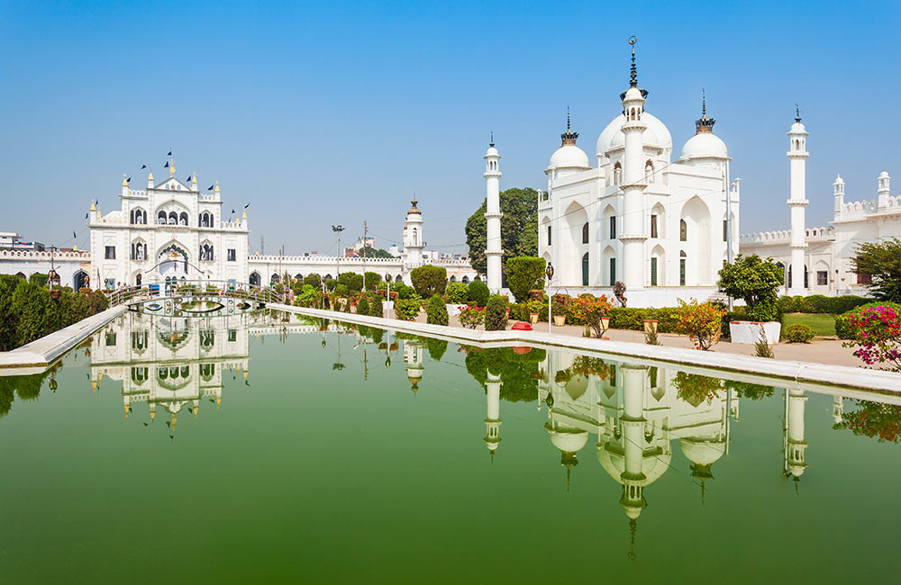

1) BADA IMAAMBARA:
Ask any local about the best point of interest in Lucknow to kick-off a city tour and
most of them will suggest Bara Imambara. That’s how culturally and historically
significant and famed this place is. The first important thing to know about it, which
you may also have guessed from its name, is that it is huge. And, the second one is
that it is absolutely stunning.
The construction of this wondrous piece of architecture is said to have started in
1785 when Awadh and its surrounding areas where hit by a devastating famine. Thus,
for the purpose of offering employment to locals in this time of need, the ruler of
the region ordered that this structure to be built. The construction went on for as
long as the famine lasted, which is almost a decade. Another intriguing fact about
this place is that its central hall is believed by many to be the world’s largest vaulted
chamber. Shahi Baoli and Bhool-Bhulaiyan are among its highlights
Timings: 06:00 AM to 05:00 PM
Entry Fee: ₹ 25
Nearest bus stop: Teele Wali Masjid (550 metres)
SHOW IN MAP
2)CHHOTA IMAAMBARA
:Do not let the name fool you. Chota Imambara is not at all small,
and certainly has
no less touristy appeal than any other tourist place in and near Lucknow. Also
referred to as Hussainabad Imambara, it was built between 1837 and 1842, about
four decades after the completion of Bara Imambara. Its gilded dome, turrets and
intricate calligraphy evokes a “wow” on every sight. Read also – Things to do in
Lucknow
It was built per the orders of Muhammad Ali Shah, the third ruler of Lucknow, who
today, along with the several members of his family, rests in tombs within the
imambara itself. Mughals, during their centuries-long reign over most parts of the
Indian subcontinent erected a plethora of buildings that are present even today.
However, Chota Imambara has to be one of the most magnificent structures any
Mughal emperor ever built in India. So, do not skip this place during your city tour
in Lucknow.
• Timings: 06:00 AM to 05:00 PM
• Entry Fee: ₹ 25
• Nearest bus stop: Chaupatiyan (700 metres)
• You may also like: Top 5 water parks in Lucknow
Aside from being a place of worship, The Umananda temple is also a pleasurable exception to the typical
places of worship. Devoid of the cacophony of forceful religion, this place has a serene environment which
makes you want to sit down for a while and absorb the beauty of the place.
SHOW IN MAP

3) BRITISH REGIDENCY:
British Residency may not be one of the best preserved monuments
in Lucknow, but
it is undeniably an important part of its history. Hence, a must visit for every history
buff during a Lucknow trip. In 1857, when the city found itself at one of the major
centres of rebellion uprisings against the cruel British rule, this place became home
to about 3000 British people.
The complex in itself is made decades older than that. It was actually built in the
latter half of the 18th century to provide accommodation to the British guests of the
regional rulers. Owing to its intriguing past and the crucial role it played in the city’s
history, it has been declared a protected monument by the Archaeological Survey of
India (ASI).
• Entry Fee: Free
• Timings: 07:00 AM to 06:00 PM
• Nearest bus stop: Gandhi Bhawan (300 metres)
SHOW IN MAP
.jpg)
4) KAISERBAGH PALACE COMPLEX:
Kaiserbagh Palace Complex is one of the hidden gems of
Lucknow which is often
skipped by tourists for the more prominent ones. Though much of it is in a
dilapidated state, it still offers a glimpse into the royal lifestyle of the past monarchs
of the region. The construction of the several buildings of the complex started on
the orders of Nawab Wajid Ali Shah in the year 1848. After the completion, the
buildings that flank the three sides of the Kaiserbagh quadrangle were turned into
quarters for the women of Wajid Ali Shah’s harem.
Although there are several structures in the complex that are quite impressive, the
one that stands out is the splendid Safed Baradari – a marvel built with white stone.
You might also be surprised to learn the fact that this building situated at the centre
of the complex was once paved with silver.
• Entry Fee: Free
• Timings: 08:00 AM to 08:00 PM
• Nearest bus stop: Baradari (80 metres)
SHOW IN MAP
5) RUMI DARWAZA:
When you make your way to Bara Imambara, stop for at least a few
minutes at Rumi
Darwaza. It is one of the finest pieces of architecture in the city of Lucknow. It is
believed to be identical to a structure that once stood in the city of Constantinople
in Turkey during the ancient times. Thus, the 60 feet tall structure is also often
referred to as Turkish Gate.
In the olden days, it marked as the entrance to the Old Lucknow city, but today it
stands as the symbol of the city. It is one of the many structures that were built by
Nawab Asaf-ud-Daula during the famine of the late 18th century to help the locals.
If you want to capture the best sights of this giant structure, then visit during the
night when it looks absolutely gorgeous.
• Timings: NA
• Entry Fee: NA
• Nearest bus stop: Teele Wali Masjid (450 metres)
SHOW IN MAP

6)CHHATTAR MANJIL:
: Another testament to the storied past of the city is Chattar
Manzil. The building
derives its name from its most prominent feature which is an umbrella-shaped dome
at its top. Another highlight of this place is its architecture which shows glimpses
of various styles. The most apparent one of these is the European style which can
be witnessed in the numerous features of the building.
Ghazi-ud-Din Haider, a former Nawab of the region, is the one who is said to have
begun the construction of the complex. However, the monarch died before it could
be completed. It was then Nasir-ud-Din Haider, his son who took the charge and
finished the project. Today, it has been turned into a government office, although
its old charm is still a treat for the eyes.
• Entry Fee: Free
• Timings: 08:00 AM to 06:00 PM
• Nearest bus stop: C.D.R.I (210 metres)
SHOW IN MAP

7)DILKUSHA KOTHI:
: The best thing about the monuments of Lucknow is their diversity as
these are built
as per not just one or two, but several styles of architecture from all over the world.
While the above monuments reflected Mughal, Hindu, European and other styles,
Dilkusha Kothi is here to show you the magnificence of the Baroque style of
architecture.
Saadat Ali Khan, during his rule in the 19th century, constructed this building, which
is a complete replica of Seaton Delavel, an English country house built in 1721. The
sprawling greenery surrounding the edifice adds to its charm.
• Entry Fee: Free
• Timings: 08:00 AM to 06:00 PM
• Nearest bus stop: C.M. Residence (2.7 km)
SHOW IN MAP

8)HUSSAINABAD CLOCK TOWER:
Nestled amidst Chota Imambara and Rumi Darwaza is
another heritage of Lucknow
– Hussainabad Clock Tower. The 221-feet structure has been dominating the
landscape of Lucknow since 1887 when it was built to commemorate the arrival of
Sir George Couper who served as the first Lieutenant Governor of the United
Province of Awadh. It is one of the tallest clock towers in the country.
• Entry Fee: NA
• Timings: Sunrise to Sunset
• Nearest bus stop: Teele Wali Masjid (1.1 km)
SHOW IN MAP

9)TOMB OF SHAADAT ALI KHAN:
: Saadat Ali Khan was a Nawab of Awadh. Today, he
rests in his tomb which appeases
one and all with its architecture. Though it is not a giant edifice, but still it is one
of the best preserved monuments in Lucknow. It is located in a neighbourhood which
is home to numerous monuments, a few of which are Safed Baradari, Chattar Manzil
and Kaiserbagh Palace. Thus, you get the opportunity to explore several points of
interest in one outing.
• Entry Fee: NA
• Timings: NA
• Nearest bus stop: Parivartan Chowk (270 metres)
SHOW IN MAP
10)JAMA MASHJID
:If architecture works as a treat for your sore eyes, then Jama
Masjid is another sight
for you to explore during a visit to the city. And not just that! It is also an important
spiritual centre, a place of worship which remains swamped with devout Shia
Muslims during all auspicious occasions.
Started in 1837 when Muhammad Ali Shah was in power, the construction of the
building was derailed at the demise of the ruler. However, Nawab Malika Janah took
the charge to make sure that the project was completed. Today, the mosque stands
as one of the finest examples of the Mughal architecture in the city of Lucknow. A
must see here are giant pillars that have Jain and Hindu carvings on them.
If you have explored all the above-mentioned tourist attractions but still feel a little
thirst to learn about history, then you can head over to the State Museum. Do not
take it to be an ordinary, run-of-the-mill museum. It succeeds when other historical
landmarks in the city fail to give you an insight into the rich past of Lucknow and
its people. It is home to a host of artistic, archaeological, anthropological and other
artefacts.
• Entry Fee: Free
• Timings: 05:00 AM to 09:00 PM
• Nearest bus stop: Hussainabad (50 metres)
SHOW IN MAP
SHARE YOUR VIEWS PLEASE AND ALSO GIVE FEEDBACK IN YOUR DASHBOARD: